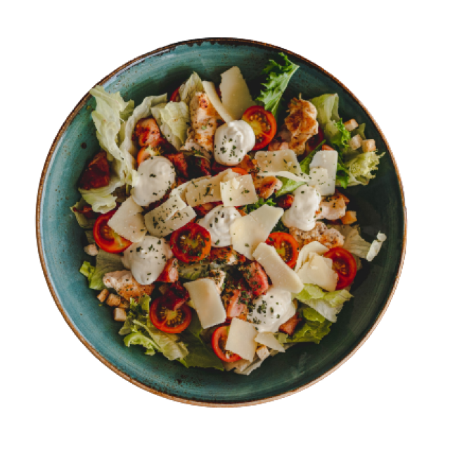
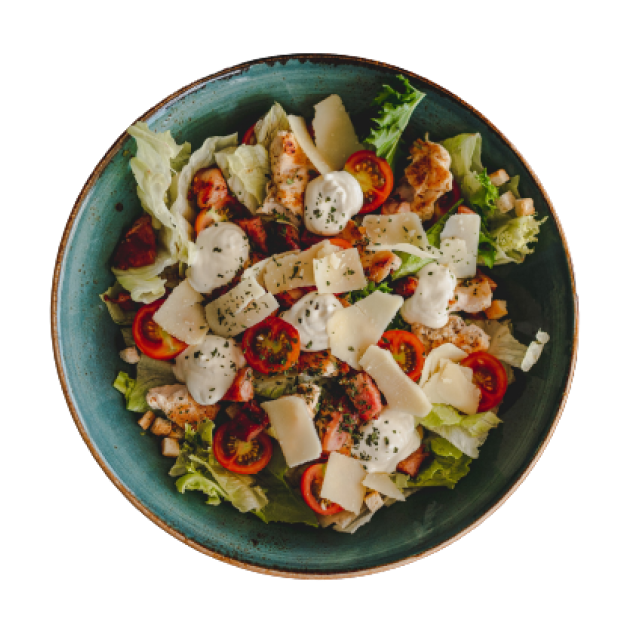

JR2353_瀧山敬義
CONCEPT
「The Loft Café」は、都会の喧騒を忘れさせる隠れ家的なカフェ。広々とした天井高の空間に、シンプルで洗練されたデザインが調和し、 ゆったりとした時間が流れる場所です。店内は、木材や鉄素材を活かしたインテリアと、暖かみのある照明が特徴。自然光が差し込む大きな 窓からは、都市の風景が一望でき、どこか心地よい開放感を感じられます。 こだわりのコーヒーとともに、季節ごとの新鮮な食材を使った軽食やスイーツを提供。仕事や読書、友人とのおしゃべりにもぴったりなこの 場所で、静かで落ち着いた時間をお楽しみください。 「The Loft Café」では、モダンなデザインとリラックスした空間が融合し、訪れるたびに新たな発見を提供する特別な場所を目指しています。


 


MENU
FOOD

濃厚カルボナーラ
イタリアの伝統的なレシピを再現した濃厚なカルボナーラ。新鮮な卵とチーズを絡めたクリーミーなソースに、香ばしく炒めたパンチェッタが アクセント。黒胡椒のスパイシーな風味が全体を引き締め、絶妙なハーモニーを奏でます。一口ごとに広がるコクと旨味を、ぜひご堪能ください。
フレッシュバゲットサンド
外はカリッと中はふんわりと焼き上げたバゲットに、新鮮なレタス、ジューシーなミニトマト、シャキシャキのきゅうりをたっぷりとサンド。 クリーミーなチーズがコクを加え、シンプルながらも深い味わいに仕上げました。爽やかな野菜の食感と香ばしいパンの風味をお楽しみください。
DRINK

ハートラテ
香り豊かなエスプレッソに、きめ細やかにスチームしたミルクを注ぎ、優しいハートのラテアートを描きました。コクのある深い味わいと、 ミルクのまろやかさが絶妙に調和し、心まで温まる一杯に。リラックスしたいひとときに、ぜひお楽しみください。
リッチブレンド・アイスカフェラテ
深みのあるコクと香ばしい風味が特徴のアイスコーヒーに、なめらかでクリーミーなミルクを注ぎました。グラスの中で美しく広がるミルクが、 コーヒーと絶妙に混ざり合い、まろやかな味わいを生み出します。氷のひんやり感とともに、贅沢なカフェタイムをお楽しみください。